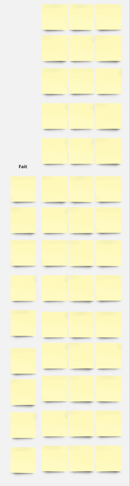

Demo 9: Design de site web
Mini retour sur les héritages CSS
Faire un navbar
Autres notes sur les composantes HTML
Exemple de club penguin presenté durant le cours
Lien: http://laura-salas.github.io/club_penguin.zip
Activité & Minidevoir de la semaine: faites un site web (équipes de 3-4)
Ébauche générale
Votre site web ne devrait que contenir qu'une page avec toutes les sections et éléments demandés. Référence pour voir de quoi je parle quand je dis "site web d'une page": Exemple de club penguin presenté durant le cours.
Vous devrez avoir 4 sections dans votre site: "bienvenue, "à propos", "services offerts" et "nous contacter", en plus d'un navbar et un footer (que vous pouvez utiliser de mon exemple de club penguin tout en le modifiant un petit peu). Vos grandes taches seront alors:
- Le navbar
- Le footer
- La page bienvenue
- La page à propos
- La page services offerts
- La page nous contacter
- Vérifier que tout le site suit généralement les 10 principes de design de Nielsen (page #19 des diapos de cours ici)
Je vous recommende également de voir l'enregistrement de la démo une fois sorti si vous avez des doutes, vers les dernières 40 minutes où je parle du devoir.
Instructions:
Vous aurez une ébauche et vous devrez vous mettre en équipe de 3-4 pour réaliser le projet.
Les absent.e.s seront mis.es ensemble et devront travailler ensemble (les absent.e.s devront s'organiser sur discord pour trouver les autres personnes qui ont été absentes et devront également s'organiser pour se rencontrer, toujours en se mettant en équipe de max 3-4). Je recommende fortement aux absent.e.s de visionner la vidéo de la démo une fois celle-ci sortie, vers les 40 dernières minutes où j'explique le devoir.
Vous devez aller sur l'application miro ici (vous pouvez zoomer ou dézoomer sur le board pour voir plus petit ou plus grand).
Sur le miro, vous devez vous entendre avec votre équipe sur un numéro de frame à prendre pour votre équipe (assurez-vous qu'il n'est pas déjà pris par quelqu'un d'autre). C'est sur ce frame que se passera votre planification. Votre numéro de frame sera votre numéro d'équipe.
Assurez-vous de lire les règles du miro ici, mais TLDR: ne modifiez pas un frame qui n'est pas à vous sous peine de note de zéro.
Vous devez choisir une compagnie quelconque, et votre site web sera sur la compagnie.
Vous devez remplir l'ébauche suivante pour vous préparer à faire le site (je n'évalue pas l'ébauche telle quelle):
xxxxxxxxxxNom de la compagnie:À propos de celle-ci (photos, texte, etc):Services offerts (3-5):Info de contact (vous pouvez inventer ceci)
Ne vous cassez pas trop la tête à remplir en détail toutes les informations, c'est vraiment juste des mini informations que vous pouvez copier-coller d'une page wikipedia ou même d'une page existante "à propos" de la compagnie
- Une fois choisie la compagnie et rempli l'ébauche, vous devrez aller dans le frame ici pour voir les rôles qui correspondent à chaque personne de votre équipe dépendant de votre numéro d'équipe.
- Vous procédérez alors à un système de "planification", décris à la section suivante:
Système de planification "à la" scrum-agile:
Pour chaque grande tâche (décrites dans la section ébauche générale):
Tenez une mini réunion (libre à vous de définir la durée de celle-ci, mais 10 minutes par réunion devrait être amplement suffissant) pour discuter des idées générales que vous avez pour cette tâche, que vous mettrez dans les post-its "idées"
Par la suite, subdiviser la tâche en 3-4 mini-taches dépendant de si vous êtes 3 ou 4 étudiant.e.s, que vous mettrez dans les post-its "à faire". La réunion est alors finie et vous procédez à travailler sur le code de votre côté.
Après la réunion, chaque personne bougera son post-it de mini tâche dans la colonne "en cours", et puis se mettra à faire sa tâche sur la page web
Après que la personne ait fini sa tâche, elle revient sur le miro et bouge son post-it de tâche à la colonne "fait".
Une fois que toute l'équipe a fini les mini-tâches (tous les post-its sont dans "fait"), vous passez à la grande tâche suivante. Assurez-vous de ne pas effacer vos post-its des tâches précédentes de la colonne "fait". Je veux voir le progrès de toutes vos tâches faite Si vous n'avez pas de place vers le bas parce que vous avez beaucoup de post-its, vous pouvez faire plusieurs colonnes de post-its pour la section "fait" de la manière suivante:

À propos de la collaboration
Si vous connaissez déjà github et que vous voulez l'utiliser pour collaborer sur votre code, allez-y.
Sinon, vous pouvez vous envoyer vos parties de code sur un groupe discord ou autre (juste pas sur le discord publique du cours), et quelqu'un de l'équipe mettra tous les bouts de code ensemble.
Instructions générales:
Nom du dossier: NotreDesignEnEquipe (oui, l'on crée bien un dossier où l'on mettra tous les fichiers du minidevoir)
Le dossier doit contenir:
le fichier
index.htmloù se trouveront tous vos élémentsle fichier
stylesheet.cssoù se trouveront vos cssun dossier
assetsoù vous mettrez toutes vos images utilisées. Assurez-vous que quand vous les utilisez sur votre index.html, vous les appelez de cette manière (si votre image s'appelle, par exemple, image.png):xxxxxxxxxx<!-- utiliser mon image dans le dossier "assets" à partir de mon index.html qui n'est PAS dans le dossier assets --><img src="assets/image.png" />Une image,
ift1005.jpgqui contient un screenshot de la version finale de votre board. Pour exporter un screenshot vous pouvez soit telecharger le PDF et chercher la page qui correspond à votre # de frame (par exemple, frame 1 c'est la page 1), ou vous pouvez faire ceci:le fichier
equipe.txtqui contient le suivant (copiez-collez ceci et ne modifiez rien à part les données pertinentes)
usernamessh1usernamessh2usernamessh3usernamessh4
qui contient chaque username de login arcade de votre équipe (si vous êtes moins que 4, effacez les lignes non utilisées).
Le dossier doit se trouver dans le même dossier de toujours (ift1005/tp0), et doit avoir les permissions appropriées autant le dossier lui même que les fichiers et dossiers à l'intérieur de celui-ci. Seulement une personne doit faire la remise, mais la personne doit s'assurer que le fichier equipe.txt est bien fait car sinon ses coéquipières pourraient ne pas recevoir leur note.
Critères d'évaluation:
50%: votre board miro
25%: votre site web contient toutes les sections et éléments demandés
25%: votre site web répond adéquatement aux 10 principes de design de Nielsen
Ce minidevoir vaut plus que les autres minidevoirs, sa pondération est de 5%.
Comment upload et download un fichier ou image à arcade de mon ordi et vice-versa?
Sur mac et linux:
Ouvez l'application terminal /ligne de commande et exécutez la commande ci-dessous. Ne vous loggez pas immédiatement sur ssh.
Sur windows:
Ouvez l'application command line/ligne de commande (pas putty) et exécutez la commande ci-dessous. Ne vous loggez pas immédiatement sur ssh.
De l'ordi vers arcade diro: (upload)
Exécutez la commande suivante, où emplacement/dans/mon/ordinateur/local/ est un emplacement sur mon ordi et PAS sur ssh où se trouve mon image ou fichier ou dossier que je veux upload à ssh, et tonusernamearcade est juste le username que vous utilisez pour aller sur arcade
xxxxxxxxxxsftp emplacement/dans/mon/ordinateur/local/monimage.jpg tonusernamearcade@arcade.iro.umontreal.ca:/home/www-ens/tonusernamearcade/public_html/ift1005/tp0/
Ce qui prend votre image monimage.jpg et la copie dans votre dossier tp0 sur arcade.
De l'ordi vers arcade diro: (download)
(remarquez que les commandes sont presque les mêmes)
xsftp tonusernamearcade@arcade.iro.umontreal.ca:/home/www-ens/tonusernamearcade/public_html/ift1005/tp0/monimage.jpg emplacement/dans/mon/ordinateur/local/
Date de remise: Mardi le 29, à 23h59 (date confirmée)